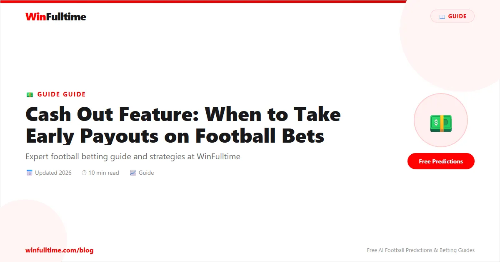

Cash Out Feature: When to Take Early Payouts on Football Bets

The cash out feature is one of the most psychologically tempting tools in modern sports betting. It allows you to settle a bet before the match ends — locking in a profit or limiting a loss. It is available on most major platforms including Betway, Bet9ja, 22Bet, and Bet365. But understanding exactly when to cash out — and when to let your bet run — is a skill that separates disciplined bettors from those who constantly give money back to bookmakers.
What Is the Cash Out Feature?
Cash out works by calculating a new price based on the current scoreline and time remaining. It effectively"buys" your bet from you at a price the bookmaker determines. If your bet is winning, you get less than the full potential payout. If it's losing, you get more than zero — but less than your stake.
You bet 1,000 NGN on Over 2.5 goals at odds of 2.00 (potential return: 2,000 NGN).
At 70 minutes, it's 1-1 — you need one more goal. Cash out offers you 1,300 NGN.
This is the bookmaker's price to buy your bet. You can take it, or let the match run for a chance at the full 2,000 NGN.
Types of Cash Out
- Full cash out: Settle the entire bet immediately
- Partial cash out: Cash out part of your stake — let the rest run
- Auto cash out: Set a threshold (e.g., auto-cash out if your acca reaches a set profit). Available on Bet365 and Betway
When to Cash Out
1. When Your Original Analysis Was Flawed
You placed the bet based on pre-match research, and within 20 minutes, it's clear the analysis was wrong. The match isn't playing out as expected — low tempo, defensive, or key players missing. Cash out to cut the loss rather than hoping for a recovery that your live observation tells you is unlikely.
2. When the Cash Out Value Exceeds Your Expected Value
This is the mathematical approach. Calculate your true probability of the bet landing, multiply by the full potential payout, and compare it to the cash out offer. If cash out > expected value of holding, take it. Pinnacle's trading resources break this down in detail for professional bettors.
3. When Accumulator Cash Out Exceeds Original Stake
For accas, a good rule is: if cash out puts you into profit beyond your original stake, seriously consider taking it. A 6-leg acca at 50/1 is unlikely to land — 5,000 NGN to 50,000 NGN looks great, but the probability is tiny. Cashing out for 3,000 NGN when you staked 1,000 NGN is already a 200% return.
Cash out value = (Cash out offered / Full potential return) x 100%
If cashing out at 65% of the full return, ask: is there a >65% chance the bet still lands? If not — cash out.
When NOT to Cash Out
When the scoreline is 0-0 but you're backing Over 2.5: In a goalless match, the cash out will be low. But if both teams are creating chances, the probability of the bet landing may still be high. Don't cash out just because no goals have been scored yet.
On single high-odds bets: A 5.00 odds bet needs one outcome. If that outcome is still on track, cashing out at 3.00 means you've given the bookmaker significant value.
The Bookmaker's Edge in Cash Out
Bookmakers make money on cash out through two mechanisms:
- The spread: Cash out prices are always set slightly below the true market probability
- Information asymmetry: The bookmaker has algorithms processing hundreds of data points — they often know when a bet is unlikely to land before you do
This means cash out is almost always fair value for the bookmaker and only occasionally fair value for the bettor. That's why most professional bettors rarely use it.
Partial Cash Out: The Best of Both Worlds
The optimal use of cash out is partial cash out. Cash out half your stake to recover your original stake, and let the remaining half run for the full payout. This means you can't lose money on the bet — whatever happens, you break even or better. This strategy works well on accas and single high-odds bets.
Pro Tip: Use Auto Cash Out for Accas
Set an auto cash out rule on your acca: if it reaches 150% profit, auto-cash out 50% of your stake. This takes emotion out of the equation entirely. Most top platforms offer this on Bet365 and Betway.
Practical Cash Out Scenarios
| Scenario | Cash Out? | Reason |
|---|---|---|
| Backing Over 2.5, 1-1 at 80' | Yes — if no clear chances | Goal probability low, market uncertain |
| Backing Over 2.5, 1-1 at 80' with 10 shots | No — clear chances created | Goal likely, hold for full payout |
| Acca about to land, cash out = 3x stake | Strong yes | Lock in massive profit, acca unlikely to complete |
| Backing team to win 1-0 with 10' left | Usually no | High probability of holding, small cash out value gain |
| Panicking after a goal conceded | Never | Emotional decision, almost always wrong |
The Bottom Line
Cash out is a useful risk management tool when used strategically. Use it to cut losses on flawed pre-match analysis, lock in profits on accas that are unlikely to complete, and use partial cash out to remove risk from high-odds bets. But never use it out of fear — and never let the bookmaker's cash out algorithm make your decisions for you.
Bet Smarter
Use WinFulltime's free predictions as the foundation of your bets — then decide on cash out strategy from there.
View Today's Predictions →